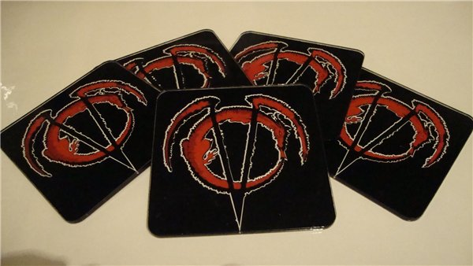
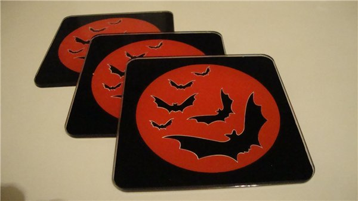

Конкурс "Черный властелин"
Вашему вниманию представлен сборник работ с девятого конкурса VC "Черный властелин". В конкурсе приняло участие 10 работ (!). Победители были определены посредством всеобщего голосования.
SoulDark, №1 (15.4%) - Три случая из жизни Черного Властелина
Avostadea, №2 (3.8%) - Тайна старого Мага
Сальфарио, №3 (11.5%) - Владыки бывают разные
Sevenhell, №4 (3.8%) - Меря вальяжно гор вышину
Valentin, №5 (7.7%) - Величие йога и взор Черного властелина
Леда, №6 (3.8%) - Последний бой
Hjordis, №7 (3.8%) - Черный властелин
Виктория Blackberry, №8 (7.7%) - Я – Черный Властелин
Argiad, №9 (15.4%) - Запах пепла стоял в воде
Эстель Кристен, №10 (26.9%) - Будни Темного Властелина
Результаты конкурса:
1 место - Эстель Кристен
2 место - Argiad и SoulDark
3 место - Сальфарио
Приз зрительских симпатий - Argiad
Наш призовой фонд:
1 место
Участник, занявший первое место по результатам голосования получает подставки для кружек из оргстекла с символикой Сообщества (приз предоставлен Викторией Blackberry) а так же фенечку в технике макраме от Эстель Кристен, изготовленной в технике косого плетения с учетом пожеланий победителя по узору.

2 и 3 место
Получают по фенечке, которую доставят с нашими наилучшими пожеланиями сверхбыстрые сотрудники Почты России.
Приз зрительских симпатий
Участник, победивший в этой номинации, получает набор подставок для кружек из оргстекла с летучими мышками на фоне луны (приз предоставлен так же Викторией Blackberry)

 Всем большое спасибо за участие.
Всем большое спасибо за участие.